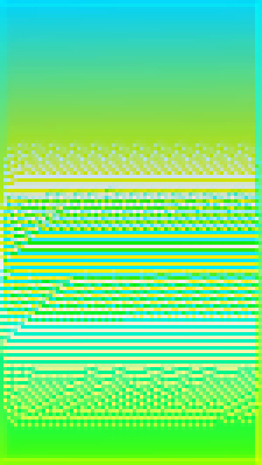
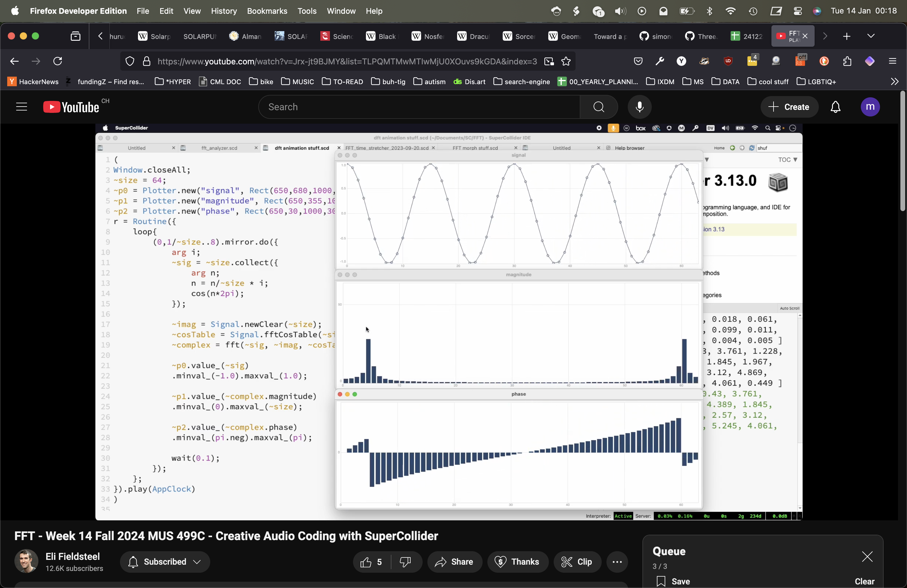

v1.0
It's been about a year since the last time I coded in p5.js, so at first, I was cautious about coming up with ideas; however, I knew even before the course started, that I wanted to create something that was, at least to some extent, interactive. Interaction to me is essential to digital art, because it fully implements the unique features of its (digital) medium and includes the audiences themselves; the recipient turns from uninvolved «passerby» to participating collaborator.
v2.0
Writing the code went unexpectedly well; while I do not remember all of what I had learned last year, I was still able to quickly get back into it. My plan was to recreate the most important elements in the picture and then modify them in a way that would implement some form of interaction. I started with the background, which consists of simple lines going across the canvas. Then I tried recreating the ellipse-shaped objects. Our lecturer recommended focusing on the lower objects, as the other ones are very complex to reproduce (I welcome the warning). Lastly, I constructed the «hollow box» by placing 4 separate quads on top of each other, to add the illusion of depth.
v3.0

With these parts, I then started to implement simple interactions: I used the mouse coordinates to change the size and shape of the objects and then added more variables for color. Finally, I added an interaction over the microphone and a «wave» offset, so the incoming sounds are visualised in a visually pleasing way. At this point I decided to focus mainly on the box, as I found the ellipses rather unfitting.